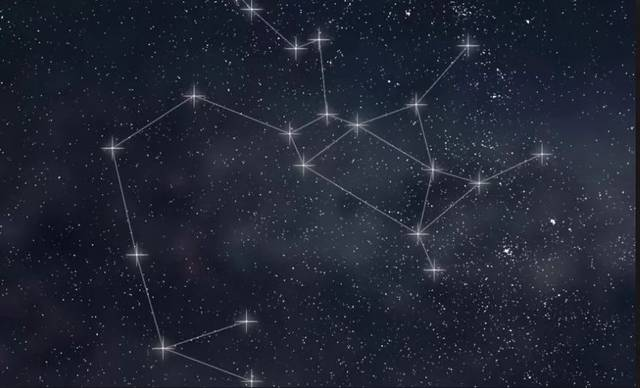
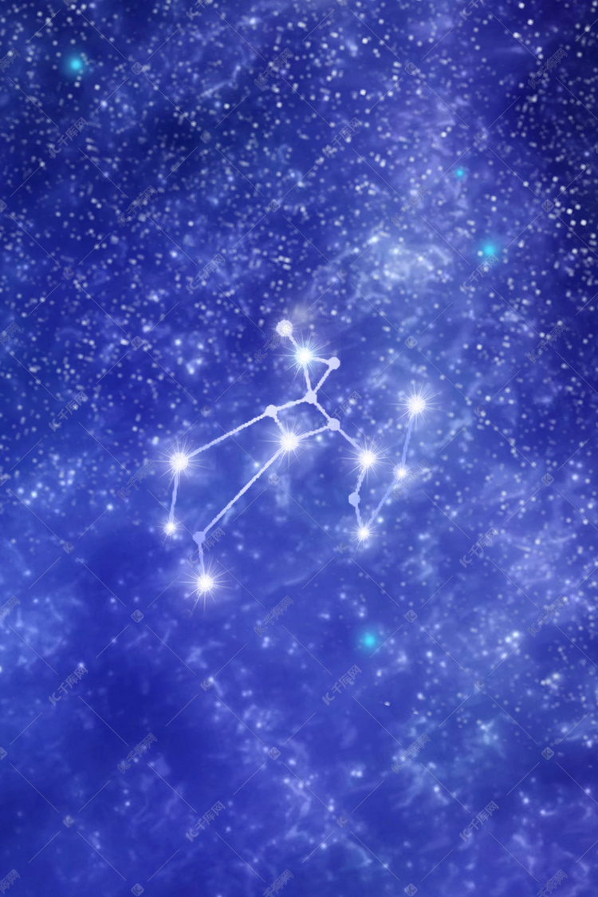

以星座的形状而言，射手座好似一位射手，正在举弓射天蝎座，而在神话故事中，射手座和天蝎座一点关系也没有，而是和马人族之一的凯龙有关。凯龙是一位极其聪明的马人，精于医术，马术和武术，受到人们的尊崇。连大力士海克力斯，也要拜凯龙为师，学习武术和天文学。
不幸的是，有一次当海克力斯和其他的马人发生争端时，一不小心把沾有九头怪蛇毒血的剑，刺向凯龙。虽然凯龙有不死之身，但九头怪蛇的剧毒，却使凯龙痛苦万分，因而将不死之身转让到普洛米休斯，让自己死掉。于是天神宙斯在凯龙死后，将他移到天上成为星座。。
